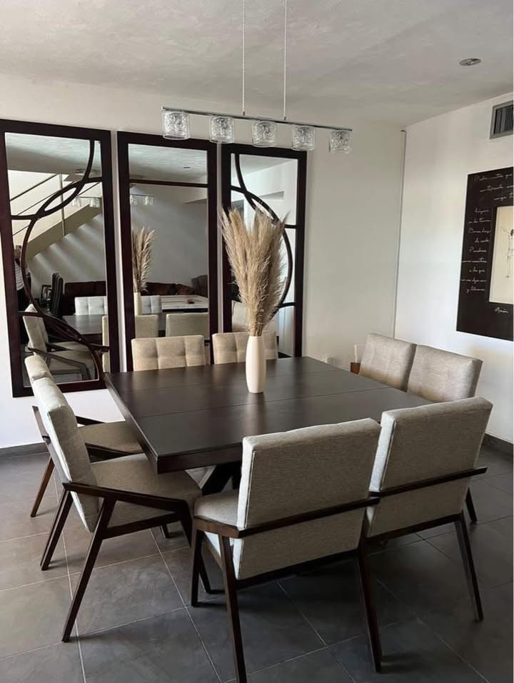

Nueva selección / 2026
Muebles y detalles
para vivir mejor.
Encuentra muebles y detalles que cambian cómo se siente tu casa. Piezas con presencia, elegidas para vivirlas todos los días.
Disponible en tiendaCiudad Lerdo

01Comedor / vida diaria
Explora por espacioEmpieza por la habitación
Empieza por la habitación
que quieres disfrutar más.
No necesitas tenerlo todo resuelto. Elige un punto de partida y descubre la dirección.
Desde Ciudad Lerdo
para tu casa
para tu casa
Nuestro estiloNo armamos espacios.
No armamos espacios.
Los hacemos tuyos.
En El Faraón encuentras una mezcla de muebles y decoración para construir una casa con ritmo propio: una pieza fuerte, una textura, una luz distinta.
01Curaduría con carácter02Asesoría cercana03Detalles que duran
Hablar con alguien de tienda Tu casa empieza aquí¿Qué habitación
¿Qué habitación
quieres cambiar?
Escríbenos y cuéntanos qué estás buscando. Te ayudamos a encontrar la pieza correcta, sin complicarte.
Pasa a verloLa pantalla inspira.
La pantalla inspira.
La tienda convence.
Estamos en Ciudad Lerdo. Confirma por mensaje la disponibilidad y el horario antes de visitarnos.
Abrir novedades y ubicación